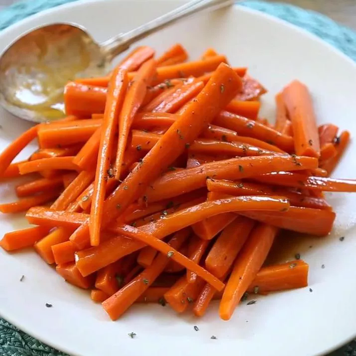

Glazed Carrots

How to Make a Glazed Carrots
Glazed carrots coated in a mixture of brown sugar and butter are a versatile side dish you can serve alongside a weeknight meatloaf, a Sunday ham, or your Thanksgiving turkey. These caramelized carrots are a definite kid-pleaser but they're elegant enough to impress the adults as well!
Glazed Carrots Ingredients
Make this glazed carrots recipe with ingredients you likely already have on hand:
- Carrots
- Butter
- Brown Sugar
- Seasonings
How to Make Glazed Carrots Step-By-Step
Here's a very brief overview of what you can expect when you make homemade glazed carrots:
- Place carrots into a large saucepan; pour in enough water to reach depth of 1 inch and bring to a boil. Reduce heat to low, cover, and simmer carrots until tender, 8 to 10 minutes. Drain and transfer to a bowl.
- Melt butter in the same saucepan over low heat. Stir in brown sugar, salt, and white pepper until dissolved. Add carrots to the saucepan and toss until coated in the brown sugar mixture. Cook and stir until carrots are heated through and fully coated with glaze, 1 to 3 more minutes.